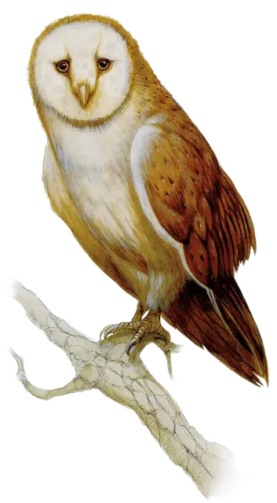

Гигантская сова
Giant Owl
Большой Небожитель, Нейтральный

Класс Защиты 12 Инициатива +2 (12)
Хиты 19 (3к10 + 3)
Скорость 5 футов, Полёта 60 футов
| мод | спас | ||
|---|---|---|---|
| СИЛ | 13 | +1 | +1 |
| ЛОВ | 15 | +2 | +2 |
| ТЕЛ | 12 | +1 | +1 |
| мод | спас | ||
|---|---|---|---|
| ИНТ | 10 | +0 | +0 |
| МДР | 14 | +2 | +4 |
| ХАР | 10 | +0 | +0 |
Сопротивление урону Излучение, Некротический
Чувства Тёмное зрение 120 футов, пассивное Восприятие 16
Языки Небесный; понимает Общий, Эльфийский и Сильван, но не говорит
Опасность 1/4 (50 опыта; БВ +2)
Особенности
Облёт. Сова не вызывает Провоцированных атак, когда вылетает из вражеской досягаемости.
Действия
Когти. Бросок рукопашной атаки: +4, досягаемость 5 фт. Попадание: 7 (1к10 + 2) Рубящего урона.
Сотворение заклинаний. Сова сотворяет одно из следующих заклинаний, не нуждаясь в компонентах заклинания (заклинательная характеристика — Мудрость):
Неограниченно: Обнаружение зла и добра, Обнаружение магии
1/день: Подсматривание
Бонус мастерства +2